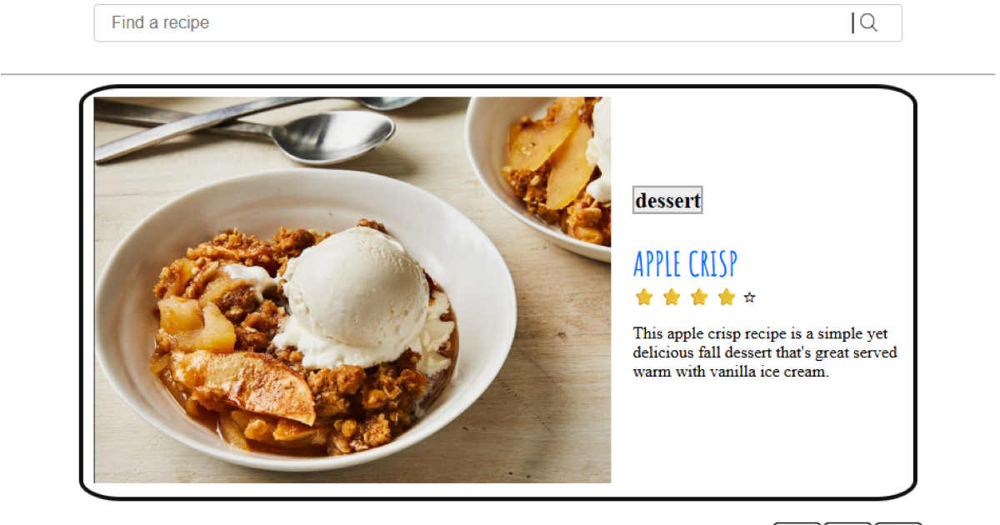
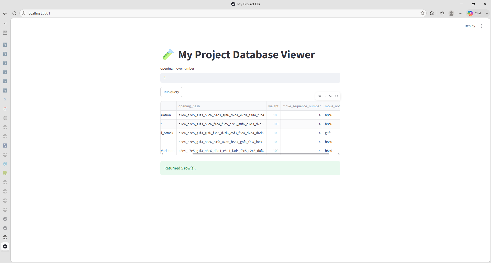
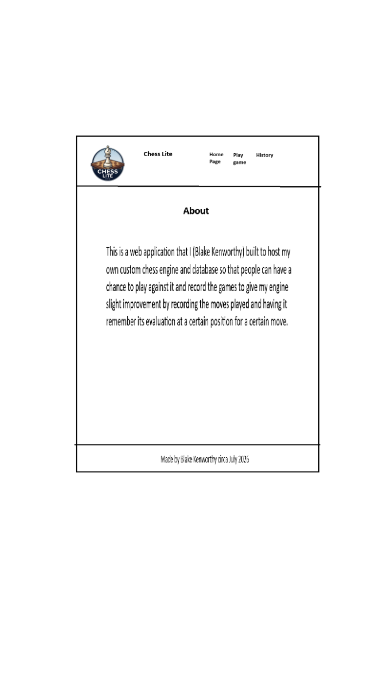

PROJECT_01PYTHON / FLASK
♜♝
♟♟
♟♟
♞♜
↗
FULL-STACK / GAME ENGINE01
Chess Lite
A web platform for a custom Python chess bot, with bitboard position evaluation, REST API communication, and SQL move logging.
PythonFlaskMySQLPytest
Explore the code ↗
PROJECT_02JAVASCRIPT / GAME
ROLL · KEEP · BANK
↗
WEB GAME / WDD13102
Farkle
A dice game built with JavaScript: roll for points, keep scoring dice for the next roll, and bank your score. The animated dice assets are grouped with the game.
JavaScriptHTMLCSSAnimated GIFs
Play the game ↗

↗
WEB / SEARCH & DISCOVERY03
Recipe Book
An online collection of recipes with searchable dishes, ratings, and a responsive presentation for finding something good to cook.
JavaScriptHTMLCSSSearch
Visit the recipe book ↗

STREAMLIT / MYSQL
DATABASE / TRANSACTIONS04
Chess DB Transaction Demo
A Python and Streamlit prototype that records chess moves in MySQL, demonstrates database transactions, and displays queries for reviewing the stored data.
PythonStreamlitMySQLSQL
Project preview · local database app

↗
FRONT-END / COURSEWORK05
WDD131 Web Projects
A collection of front-end exercises and small sites, exploring responsive layouts, forms, accessible interfaces, and interactive page elements.
HTMLCSSJavaScriptResponsive
Browse the projects ↗
PROJECT_06HTML / CSS / JS
blakekenworthy.dev
DESIGN / CODE / SHIP
The web,
with intention.
EXPLORE WORK ↘
↗
WEB / PERSONAL06
This portfolio
A responsive portfolio built to make project details easy to explore, with accessible navigation and a theme you can switch.
HTMLCSSJavaScriptResponsive
Back to the top ↑